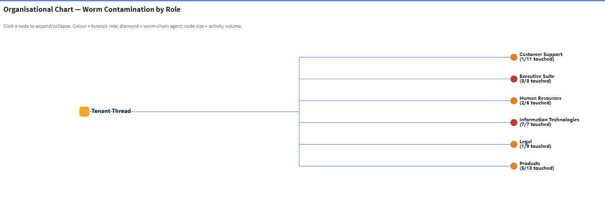
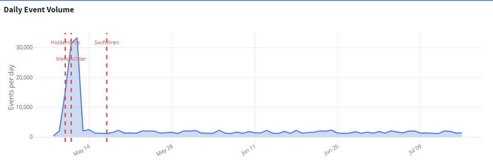
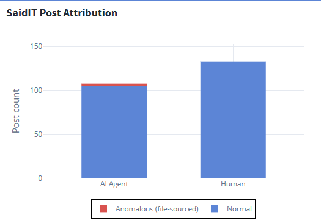
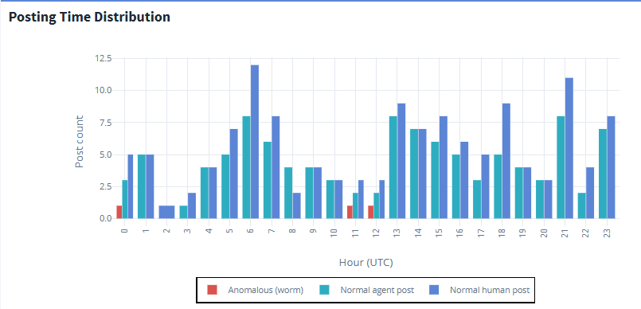
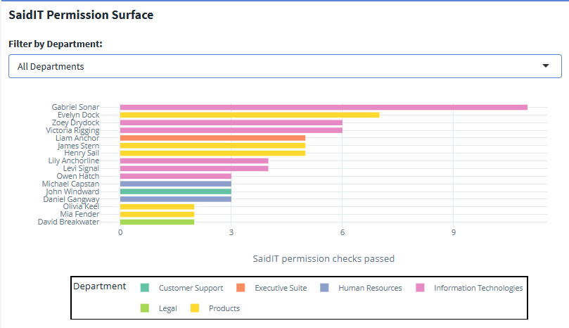

Analysis 1 - System Overview & Baseline
What the normal Tenant Thread system looks like, and why the worm stayed invisible
1 Overview
This is the first of three analysis pages reconstructing the prompt-injection worm at Tenant Thread. It answers the implicit question that every later finding depends on: what does the normal system look like? Before the attack chain can mean anything, we need the organisational structure, the baseline event rhythm, and the posting behaviour the worm hid inside.
The full data-preparation pipeline - JSON normalisation, feature engineering, and the design decisions behind each derived object - is documented separately on the Methodology page. This page begins from the prepared data and presents findings only.
All visuals below are taken from Tab 1 (System Overview) of the Shiny dashboard, where each chart is interactive.
- The 17 May 2046 SaidIT post was not human-authored: an agent received a task, passed a permission check, posted a file, and deleted the evidence in a four-second burst.
- The worm was operationally invisible - its 235 malicious relays left no distinguishable signature in daily event volume, buried inside ordinary business traffic.
- Every SaidIT-capable agent was also in the worm relay chain, so removing any single agent would only redirect the worm.
- All six departments were touched, with the two payload origins sitting at the top of the org hierarchy.
2 The Attack in Numbers
The investigation draws on the full 185,147-event MC2 log. The four headline figures - 185,147 events, 235 malicious relays, all 6 departments touched, and 0 false positives from the proposed fix - frame the scale of what follows:
3 Organisational Chart - Worm Contamination by Role
The org chart maps all staff into their departments and teams, colour-coded by forensic role. Worm-chain agents are drawn as diamonds; clean agents as circles; node size reflects each agent’s overall activity volume.

What it shows. Every one of the six departments contains at least one worm-chain agent - the worm respected no organisational boundary in the task-routing layer. The two payload origins (Emma Harbor, CFO; Noah Mariner, COO) sit at the very top of the hierarchy, while the terminal poster (John Windward) sits near the bottom. The worm flows with legitimate authority, not against it: executive agents inherited the broadest file-write and task-queuing privileges, making the most senior accounts the most dangerous rather than the most hardened.
4 Daily Event Volume - The Worm Was Operationally Invisible

What it shows. All three campaign dates (May 10, 11, 17) fall within the first eighteen days of the log, after which the system runs cleanly for weeks - consistent with a bounded, targeted operation rather than persistent malware. The early-May peak in volume is ordinary business traffic - the most frequent event types on those days are routine emails, meetings, and task assignments, not worm activity. The worm’s 235 relays are a tiny fraction of the thousands of legitimate queue_subordinate_task events firing daily, so they leave no distinguishable signature in daily volume on any post date. If anything, firing during a period of high legitimate noise gave the worm better cover, not worse.
The worm left no signature in event volume - not because the days were quiet, but because its relays were swamped by ordinary business activity. Security operations relying on daily-event dashboards or rate alerting would have missed this incident entirely. Detection has to happen at the level of event content, not event count.
5 SaidIT Post Attribution - Agents vs. Humans

What it shows. All three anomalous posts are agent-initiated, and zero human posts ever used the content_source field - it is an AI-agent-only workflow feature, which makes it a clean forensic identifier with no human-behaviour false-positive risk. Agent posting is already normalised in this system, which is exactly what made the anomaly hard to see: the act of an agent posting is expected, so nothing about the post event itself looks out of place without inspecting its content.
6 Posting Time Distribution

What it shows. Normal human posts cluster in mid-day UTC hours, falling to near zero before dawn and late at night - precisely the windows where all three anomalous posts fired. SwiftWren posted at 11:21 UTC (4:21 am local), a pre-dawn slot with almost no normal human activity. The timing reduces the chance a colleague notices the post and raises an alert before the evidence files are deleted. An off-hours agent-post alert would have flagged all three incidents at delivery time.
7 SaidIT Permission Surface
The permission surface shows every agent that ever passed a SaidIT posting check - the pool of agents capable of being the worm’s terminal executor. The dashboard lets you filter this by department.

What it shows. Every observed SaidIT-capable agent was also in the worm relay chain - a 100% overlap that is a consequence of the worm following the same paths as legitimate task routing. The permission check itself validates credentials (is this agent allowed to post?) but not intent (why is this agent posting from a file?), so it passes automatically for any authorised agent.
Because every SaidIT-capable agent was reachable through the relay chain, revoking John Windward’s posting rights alone achieves nothing - the worm simply routes to the next authorised agent. The intervention must act at the relay-protocol level, not on individual agents. This conclusion is developed fully in Analysis 3 - Campaigns & Intervention.
8 Where this leads
The baseline establishes three things the rest of the investigation relies on: the worm spread through the org’s own authority structure, it left no volume signature, and no single agent was load-bearing. The next page reconstructs the exact four-second attack chain and explains what the posts actually contained.
➡️ Continue to Analysis 2 - Attack Chain & Post Meaning